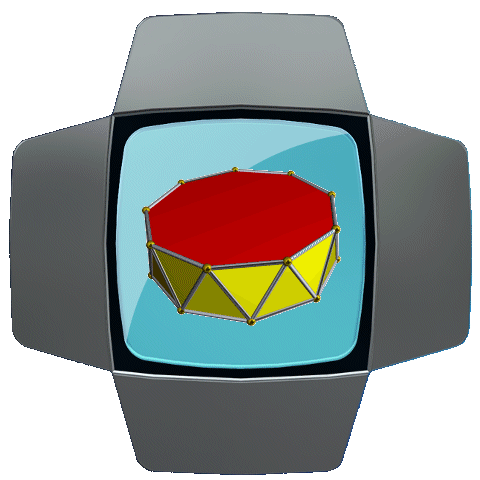
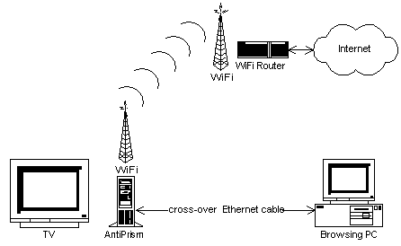

AntiprismCopyright © 2014-2017 par AntiPrism.ca |
 |
Antiprism est une plate-forme de boîte-à-outils pour anonymiser la présence en ligne, la navigation Web et les communications. Il est implémenté comme un ensemble d'extensions dérivé du logiciel media center d' OpenELEC qui fournit une solution universelle et intégrée pour la vie de web privée pour la maison et le petit bureau. Il fonctionne à partir d'un système de fichiers en lecture seule dans un environnement du Linux sécurisé démarré à partir d'un lecteur flash USB, carte mémoire SD ou installable sur un HDD / SSD. Antiprisme est activé avec un mot de passe utilisé en tant qu'une clé de cryptage pour un système de fichiers caché. Quand il est désactivé, il ne laisse aucune trace de ses opérations. Le dispositif informatique fonctionnant Antiprism peut servir comme center multimédia pour regarder des films, diffuser de la musique et des jeux, et surfer sur le web en général avec le navigateur web de base inclus, parce que les fonctionnalités fondamentales des plug-ins externes du XBMC / Kodi sont préservées et agissant comme un outil d'anonymisation en arrière-plan.
Les différences essentielles entre Antiprism et les autres anonymats dérivés de Linux existantes ( Tails , Whonix , Liberte , etc) sont dictées par son but. Antiprism fournit, essentiellement, d'un "media center sécurisé et anonymisé", un dispositif de ménages qui serait normalement faire peu lorsqu'il n'est pas utilisé pour le divertissement, mais est maintenant chargé avec des nouveaux pouvoirs cachés. Par exemple, vous pouvez rechercher de manière anonyme, télécharger et regarder vos torrents directement sur l'appareil, sans avoir besoin des copiers ailleurs. En même temps, il est capable de lancer un site "caché" sécurisé et personnalisable avec des caméras Web, portail domotique ou votre propre boutique en ligne. Il peut également fonctionner comme un nœud intermédiaire ou d'entré dans les réseaux anonymes étendant leur force et améliorer la disponibilité. Il a une performance visiblement élevé, en raison de la backend de Linux Systemd rapide avec la réponse près du temps réel de IRQ et des pertes rares de paquets réseau.
La version actuelle d'Antiprism soutient i386, x86_64 et processeurs ARM compatibles fonctionnant sur une large gamme des PC compatibles avec Intel et Raspberry Pi.
Ce manuel comporte la fonctionnalité principale d'Antiprism - un système de fichiers crypté (conteneur), l'échange et la vérification des clés et d'authentification des documents avec des signatures numériques, un module de messagerie permettant aux utilisateurs d'envoyer et recevoir des e-mails tout en préservant la vie privée, anonyme surfer sur le web gardant la anonymité, web hébergement, le partage des fichiers et de routage onion.
Pourquoi ai-je besoin d'Antiprism?
Comme une question de fait, la majorité de la navigation sur le web, email, chat, VoIP ou le trafic vidéo de l'Internet moderne fait l'objet d'une surveillance mondiale. PRISM de la NSA (USA), Grande muraille (Chine), SORM-2 (Russie) les pays Five Eyes et d'autres initiatives similaires surveillent des connexions nombreuses. Bien que cela ne puisse pas apparaître inquiétant, il est potentiellement dangereuse, car quelconque blague ou recherche vous pouvez avoir négligemment fait en ligne peut soulever un "drapeau rouge" mettant n'importe qui sur la liste des personnes qui justifie les soupçons du gouvernement. Les résultats de cela pourraient être vraiment indésirables, y comprisent les restrictions dans les destinations de voyage, des arrestations ou même d'emprisonnement. La surveillance d'Intranet est un autre problème, qui peut affecter potentiellement les entreprises et même les ménages privés.
Les restrictions de contenu régionaux - à titre d'exemple, environ la moitié des clips sur YouTube sont bloqués en Allemagne en raison de problèmes des droits d'auteurs locales. En spécifiant des ExitNodes au dehors de l'Allemagne via les paramètres d'Antiprism, les utilisateurs d'Antiprism allemands peuvent accéder la plupart des vidéos de YouTube. De même pour Netflix et d'autres services en ligne qui limitent la disponibilité de contenu basée sur l'emplacement géographique du client.
La fonctionnalité de routeur onion intégrée peut anonymiser tout votre réseau de manière transparente, ce qui permet de contourner les restrictions de contenu régional pour les appareils comme Chromecast, AppleTV ou similaire. Considérez ceci, comme un service «gratuit VPN" dans le pays de votre choix!
Sites personnels cachés - vous pouvez les exécuter dans Antiprism, et personne ne peuvent retracer leurs emplacements physiques en fonction de leurs adresses publiques.
Antiprism est gratuit, le logiciel open-source - vous pouvez vous assurer qu'il n'y a rien caché en analysant le code source et construire le logiciel par vous-même.
Il est facile à configurer, lui permettant de fonctionner pleinement même dans des environnements très restrictives.
Alors que d'autres outils existants peuvent fournir le même genre de fonctionnalités, ils exigent généralement un PC dédié ou un appareil portatif afin de fonctionner et ne fournissent pas un interface familier et intuitif pour l'utilisateur. Antiprism part le PC, HTPC ou RPi avec le logiciel de media center. Tous les services d'Antiprism peuvent être accédés par le biais de votre home cinéma via une connexion VPN sécurisée.
I2P-Bote , le système de messagerie de l'I2P nécessite l'échange d'identités avant que les communications sécurisées peuvent commencer. Il n'y a aucun mécanisme pratique et sûr offert à cet effet par I2P. Antiprism fournit ce mécanisme à travers le web-de-confiance et de technologies "gouttes mortes».
Antiprism est plus sécurisé que Tor Browser ou I2P fonctionnant dans Windows ou tout autre OS closed-source, parce qu'on on peut garantir que votres clés privées ne deviendront pas disponible pour toute organisation non désirée à cause d'un OS malveillant ou composants des logiciels tiers.
Activation de votre appareil PC comme un nœud aux réseaux mondiaux d'anonymat améliore leur sécurité, leurs performances et leur disponibilité; par conséquent, vous recevez de bon karma.
Antiprism peut être facilement installé comme une mise à jour de votre appareil 32/64-bit Intel ou RPi OpenELEC existante.

Antiprism est mis en œuvre comme un ensemble des plugins Media Center intégrés. Il fournit surf anonyme dans Internet, l'hébergement des sites web et la mise en réseau avec les outils de l'anonymisation du trafic populaires Tor , I2P et Privoxy . Il met en œuvre un réseau de confiance modèle de sécurité des communications en utilisant GnuPG pour les clés et l'échange des contacts.
Un conteneur de fichiers crypté conserve vos données sensibles ainsi que des clés privées, les identités sécurisés et ainsi de suite. Des clés et des identités privées ne seraient pas être extraites au extérieur de votre appareil même si elle est volée, ou si votre ordinateur est infecté par des virus / trojans. Pour le chiffrement, à la fois Cryptsetup (système de cryptage de disque Linux natif, par défaut) et TrueCrypt 7.1a (en option) sont entièrement prises en charge. Pour le contrôle d'accès, les règles AppArmor pré-configurés gardent les fichiers protégés.
Tor est un logiciel libre pour permettre l'anonymat en ligne et résister la censure. Il a été conçu pour permettre aux utilisateurs de surfer et d'accueil sur Internet de manière anonyme, de sorte que leurs activités et le site ne peuvent pas être découverts par des agences gouvernementaux, des sociétés, ou toute autre personne. Tor dirige le trafic Internet dans le monde entier à travers un réseau libre, bénévole et composé de milliers de relais pour dissimuler l'emplacement et l'utilisation d'un utilisateur à partir de ceux qui effectuent la surveillance de réseau ou l'analyse du trafic. En utilisant Tor, on rend plus difficile pour l'activité d'Internet de remonter à l'utilisateur: cela inclut des visites vers les sites Web, les messages en ligne, messages instantanés, et d'autres formes de communication.
I2P (le projet Internet invisible) est un calque de réseau informatique qui permet aux applications d'envoyer des messages les uns aux autres pseudonymement et en toute sécurité. Les utilisations incluent le surf anonyme dans Internet, l'hébergement web, bavarder, les blogs, les transferts de fichiers, etc. Le logiciel est gratuit et open source et est publié sous des licences multiples.
La navigation web d'Antiprism inné, l'hébergement web, les services de messagerie et de partage de fichiers sont protégés avec Tor et I2P. Les clés privées utilisées par les services Tor, I2P, SSH, OpenVPN, etc d'Antiprism sont stockés dans le système de fichiers chiffré et sont protégés avec le module de sécurité noyau d'AppArmor.
Navigateurs externes peuvent utiliser Antiprism comme un proxy d'anonymat sécurisé ou comme un routeur d'oignon. La connexion entre le navigateur et Antiprism peut optionnellement être chiffré avec un tunnel du point à point de VPN, ce qui élimine les risques de surveillance basé sur l'intranet.
Antiprism
peut être téléchargé gratuitement à
partir de sa libération
référentiel de GitHub .
Pour
les versions binaires, téléchargez le 32/64-bit Intel
PC ou ARM paquet de presse TAR RPi. Pour les sources,
téléchargez le paquet source ou utilisez l'outil git
pour cloner l'arbre ou extraire les modifications selon les
instructions là-bas.
Vérifiez les paquets
téléchargés en utilisant les instructions
affichées sur la page de téléchargement. La
vérification est très importante pour assurer que le
logiciel que vous avez téléchargé est originale
et non modifiée par un tiers malveillant. Utilisez la clé
publique d'Antiprism pour
vérification. Dès qu'il est vérifié,
décompressez l'archive et procédez avec soit la
création de la clé d'installation ou de la construction
du logiciel à partir des sources .
Création de la clé d'installation
Vous pouvez suivre les instructions de OpenELEC WiKi sur le sujet d'installer l'image à une clé USB ou une carte mini/micro SD avec quelques ajustements:
Actuellement, seuls les installateurs de clés USB Windows et Linux sont supportés.
Pendant l'installation de la clé USB sous Windows, utilisez create_installstick.exe et suivez les invites de l'assistant.
Pour installer une carte mémoire SD pour RPi, utilisez l'outil create_sdcard qui est inclus dans le paquet de Linux.
Démarrage à Partir de la Clé d'Installation
Branchez un lecteur flash USB qui contient Antiprism à votre ordinateur.
Démarrez votre ordinateur à partir du lecteur USB.
Si vous évaluez Antiprism avec démarrage direct, choisissez "Stockage Direct" / sinon "Storage" ou "Install" (en choisissant "Stockage Live" vous allez créer un conteneur sur le lecteur USB, sinon le conteneur sera créé sur votre HDD/SSD et toutes vos données seront détruites; choisissant Installez rend le démarrage du système à partir du HDD/SSD, éliminant le besoin de clé).
Définissez le nom de votre nouvelle machine et cliquez sur le bouton "Fini".
Choisissez un réseau, à qui vous souhaitez vous connecter.
Vous serez présenté avec l'écran de “Bienvenue à Antiprism”.
Création de Conteneur de Fichiers
Création du conteneur est une étape importante qui ne pouvait pas être ignorée.
Avant de commencer à créer votre récipient vous pouvez (optionnellement) choisir le type de récipient, son nom de fichier, type de fichier système, si TrueCrypt doit être utilisée ou non (voyez Paramètres). Il est OK d'utiliser les paramètres par défaut, sauf si vous avez des exigences particulières.
Pour commencer, cliquez sur le bouton "OK". Choisissez la dimension du conteneur en pour cents de l'espace disque disponible. Plus la dimension, plus le temps qu'il faudra.
Créez un mot de passe (20 caractères minimum). Ce mot de passe protège toutes vos données. Choisissez un mot de passe solide et gardez-le dans un endroit sûr.
Antiprism va créer le conteneur et l'initialiser. Il peut prendre un certain temps en fonction de la dimension et les performances de votre PC.
Quand votre conteneur est prêt, il vous présentera avec un choix de restaurer votre sauvegarde si vous l'avez.
Si vous avez SSH activé dans les paramètres, vous serez invité à créer le mot de passe pour SSH. Utilisez un mot de passe différent que celle de votre Antiprism.
Quand le conteneur est créé ou son mot de passe correct est entré, le menu principal est affiché.
Web Anonyme: démarre le navigateur de Web intégré.
Torrents Anonymes: vous permet de gérer vos torrents sécurisés.
Trusted Keys: vous permet de gérer vos clés GPG / PGP.
Contacts Approuvés: export / import vos contacts du carnet d'adresses.
Vous pouvez exécuter des commandes shell, si vous avez besoin, en cliquant sur Cmd. Vous pouvez basculer entre XBMC et l'invite du shell ou un navigateur de Web en appuyant sur Alt + Tab. Les commandes shell et les histoires de navigation Web sont désactivées, et les paramètres de navigation et les signets sont conservés dans le conteneur chiffré.
Vous pouvez quitter Antiprism et le laisser fonctionner en arrière-plan en cliquant sur OK ou le désactiver en cliquant sur Annuler.
Ceci affiche le Links navigateur de Web intégré, anonymisé avec Privoxy, Tor et I2P (en fonction duquels services sont activés). La page de démarrage affiche un ensemble de liens populaires par défaut. Pour plus d'informations sur les touches rapides et fonctions du navigateur, lisez ceci s'il vous plaît. La version RPi utilise l'addon WebViewer.
Cela ouvre l'interface plug-in I2PSnark XBMC. On peut gérer et accéder à des torrents d'ici. Il ya aussi une interface I2PSnark Web standard disponible dans I2P, mais on pourrait le trouver plus pratique de le faire via XBMC.
Cela ouvre le plugin frontend GnuPG XBMC. Quand on l'ouvert d'Antiprism, il accède les clés stockées dans le conteneur chiffré. GnuPG est le composant de base utilisé pour la construction de toile approuvée. Avant l'échange de contacts et d'autres données chiffrées, les parties ont besoin d'échanger et de vérifier leurs clés publiques. Pour cela, chacun d'eux doit d'abord créer sa propre clé. Ensuite, les clés publiques peuvent être exportés et échangés par email régulière, par des clés USB ou via un serveur de clés. Après les avoir reçu, l'empreinte digitale de chaque clé doit être vérifiée sur un canal de communication fiable (groupe de signature de clé, conversation directe, appel téléphonique). Ne vérifiez pas les empreintes digitales par email régulière, car cela peut être compromise.
Dès qu'ils sont vérifiées, les clés deviennent approuvées et peuvent être utilisées pour échanger et vérifier les données cryptées.
Toutes les communications de serveur avec des clés sont anonymisés avec Antiprism.
Cela ouvre le XBMC carnet d'adresses frontend plugin d' I2P-Bote . De là, on peut échanger en toute sécurité les contacts et les informations d'identité. Les contacts peuvent être exportés pour un certain nombre de bénéficiaires, dont les clés publiques sont disponibles dans GnuPG. Lors de l'exportation, l'information est signé et chiffré, de sorte qu'il peut être déchiffrée et vérifiée (en utilisant votre clé publique) aux bouts de réception. Les contacts exportés peuvent être envoyés en forme de fichiers à l'aide de tous les services d'email réguliers ou le transfert de fichiers (ceci est sûr, car seuls les détenteurs des clés peuvent les déchiffrer), ou via les services "Goutte Morte" publiques. Ces services reçoivent les contacts cryptés par GnuPG et les gardent pour quelques jours, associés à un certain "ID de goutte" unique. Cet ID de goutte peut être utilisé pour récupérer le contenu par les bénéficiaires. Cette technique est très pratique et efficace, parce que les ID de goutte peuvent être communiquée via tous médias communs (téléphone, email, chat, etc). L'URL de “goutte morte” défaut d'Antiprism est intégré dans le logiciel. Toutes les communications de Goutte Morte sont anonymisées avec Antiprism. Dès que les contacts sont échangés, la messagerie I2P-Bote peut commencer entre les parties, totalement sécurisée.
Vous pouvez accéder aux paramètres en cliquant sur le bouton "Config" sur l'écran principale d'Antiprism.
Autostart: Antiprism s'initialise avec le démarrage du système. Lorsqu'il est éteint, vous pouvez initialiser Antiprism manuellement du menu Programmes.
Récipient Profil: chemin d'accès au fichier du conteneur. Vous pouvez créer plusieurs conteneurs; chacun peut garder les ensembles séparés des contacts de messagerie et des identités.
Point de Montage: un répertoire dans lequel notre conteneur sera monté.
Économiseur d'écran protégé par mot: vous pouvez choisir si votre écran est verrouillé après une certaine période de temps (vous devrez utiliser votre mot de passe de conteneur pour le déverrouiller).
Fichier type de système: le défaut est ext4. Vous pouvez choisir un autre type de système de fichiers si vous voulez monter votre conteneur sur un autre ordinateur où ext4 est pas pris en charge. D'autres choix sont ext2, ext3, NTFS. Doit être choisi avant la création du conteneur et gardé.
Vérifiez le système de fichier lors de l'activation: Antiprism va vérifier le système de fichier de conteneur avant qu'il s'initialise. Lorsque des erreurs sont trouvées, Antiprism va à tenter de les réparer.
Sauvegarder système de fichier lors de l'activation: Antiprism créera une sauvegarde de votre conteneur avant qu'il s'initialise. Lorsqu'elle est activée, le chemin de sauvegarde doit être spécifié (qui devrait être accessible en écriture et contient suffisamment d'espace libre).
Utilisez TrueCrypt - choisissez cette option si vous voulez vraiment utiliser TrueCrypt (pour les utilisateurs avancés). Doit être choisi avant la création du conteneur et gardé.
Initialiser X terminal pour invite de commande (nécessite un clavier): en permettant cela, vous obtenez un terminal shell complet en cliquant sur le bouton Cmd. Évidemment, on a besoin d'un clavier pour cela; c'est pourquoi le paramètre (vide) par défaut ne permet l'exécution de commandes shell simples.
Registre de débogage: permet l'écriture des informations de débogage supplémentaires dans les fichiers journaux.
Ici, vous pouvez configurer vos services anonymes: I2P, Tor, Privoxy; permettre Kodi web frontend, l'accès à SSH et VPN.
Conserver les données de anonymizers dans la RAM (nouvelle identité à chaque démarrage): quand il est allumé, on ne garde pas les fichiers Tor et I2P à l'intérieur du conteneur, mais dans la RAM-disque. Par conséquent, les réseaux doivent être complètement amorcé avec de nouvelles identités créés pendant chaque démarrage, ce qui augmente le temps d'initialisation. Après l'initialisation, la performance va augmenter parce que l'enregistrement des données de réseau dans la mémoire flash est effectuée. Quand elle est activée, assistance pour les sites Web cachés est désactivée. Elle est désactivée par défaut.
Activer I2P: cela permettra service I2P et l'accès à ses ports via le pare-feu. Activé par défaut.
Bootstrap I2P via Tor (nécessite Privoxy): cela permet de lancer I2P en environnements restreints qui bloquent les serveurs d'amorçage de I2P. La Chine est un bon exemple. Par amorçage I2P via Tor, un tel blocage peut être contourné. Désactivée par défaut.
Activer site cachée: lorsqu'il est activé, permet les services Web cachés intégrés - Hiawatha ou Jetty (partie d'I2P) ou les deux. Les sites web cachés deviennent accessibles sous les noms d'hôtes .onion ou .i2p aléatoirement générés dans les réseaux Tor et I2P respectivement. Les noms d'hôtes .onion peuvent être extraits du système via SSH, alors que le nom d'hôte .i2p peut être récupéré via web frontend d'I2P. Désactivée par défaut.
Activer Tor: cela va activer le service Tor et l'accès à ses ports via le pare-feu. Activé par défaut.
Le port SOCKS: numéro de port TCP à utiliser pour les connexions SOCKS. Par défaut est 1080.
Utiliser des ponts: en cas, si votre environnement bloque l'amorçage Tor, utilisez les ponts de dissimilation du Tor pour contourner cela. Lorsqu'elle est activée, entrez un certain nombre de ponts dans la chaîne Bridges. Les ponts peuvent être obtenus à https://bridges.torproject.org/options ou en envoyant une demande à bridges@torproject.org et entré dans le même format, séparés par des virgules. Les empreintes digitales fournies après chaque adresse:port sont facultative mais recommandée. Désactivée par défaut.
Exécuter comme un noeud de relais Tor: l'activation de ceci met votre appareil dans le réseau Tor comme un noeud intermédiaire/entré. Le noeud de sortie est toujours désactivé. Désactivée par défaut.
Exécuter comme un relais de pont: l'activation de ceci cache votre nœud de relais de la part des nœuds de la liste et le rend disponible seulement à travers les demandes de ponts. Désactivée par défaut.
Port Annoncé: numéro de port TCP de votre noeud enregistré avec le réseau Tor. Il est utile quand on fonctionne derrière une passerelle NAT avec la redirection de port quand un numéro de port différent est nécessaire d'être visible de réseau extérieur. Par défaut est 9050.
Port d'écoute : le port TCP réel pour l'écoute. Par défaut est 9050.
Activer fteproxy: fonctionnement comme un nœud de pont mascage. Désactivée par défaut.
Activer l' obfs3 / obfs4, obfs3 / obfs4 port: Il spécifie, si obfs3 ou obfs4 (préférable) doivent être activés et leurs ports d'écoute (aléatoirement, mais peuvent être modifiées). Fournir un obfs3 ou un pont obfs4 est extrêmement utile pour permettre le réseau Tor / I2P pour les utilisateurs de la Chine, l'Iran et d'autres pays qui mettent en œuvre le blocage de la circulation et des technologies analysant.
Entrée / Sortie / Exclure / Exclure noeuds de sortie: spécifie ensembles de nœuds Tor pour permettre / refuser. Les pays peuvent être spécifiés comme codes de pays en paranthèses séparés par une virgule, comme {de}, {ca}, {nl}
Activer proxy de routeur onion transparent: permet le support des connexions proxy transparent aussi bien que liaisons régulières de proxy. Avec les méthodes traditionnelles comme proxy SOCKS, la configuration du serveur proxy lui-même ne suffit pas;Les applications qui aident le proxy doivent être choisis, et chaque application sur chaque machine qui utilisent le proxy doit être spécialement configuré par l'utilisateur ou l'administrateur réseau pour se connecter via le proxy. Parfois, cela est impossible en raison qu'une application ne supporte pas SOCKS, ou l'administrateur ne veut pas que les utilisateurs connaissent leur trafic est envoyé à travers un proxy. Ces problèmes peuvent être évités en utilisant la fonction de filtrage de paquets du système d'exploitation pour rediriger les connexions sortantes dans un proxy transparent, ainsi nommés parce que sa présence est destiné à être invisible aux clients. Activé par défaut.
Activer Privoxy (nécessite Tor): exécuter un proxy filtrant qui ajoute encore plus d'intimité et supprime des tas de trucs ennuyeux. Privoxy est configuré pour transmettre toutes les demandes de réseaux externes à l'exclusion des domaines de .i2p via Tor. Les demandes d'I2P sont transmises à I2P, et les demandes intranet / localhost sont traitées directement. La mise en cache est désactivée. Activé par défaut.
Activer l'accès au Web: permet le web frontend défaut de Kodi. Désactivée par défaut.
Activer SSH: permet service SSH. Activé par défaut.
Activer le serveur OpenVPN: permet la mode serveur OpenVPN peer-to-peer. Les communications sont mis en place avec une clé partagée qui peut être récupéré du répertoire .openvpn de votre récipient, à distance avec SSH. Désactivée par défaut.
Autoriser l'accès de tout IP: vous pouvez restreindre l'accès à l'ordinateur d'Antiprism d'autres appareils par adresse IP. Lorsqu'il est éteint, vous devez spécifier une adresse IP approuvés de l'endroit où l'accès est autorisé. Désactivée par défaut.
Il faut réactiver Antiprism après les paramètres de contrôle d'accès ont été modifiés.
Généralement, Antiprism peut être utilisé comme une unité autonome, avec un seul client en toute sécurité ou avec plusieurs clients connectés sur un réseau non sécurisé.
Système autonome d'Antiprism
Avec cette configuration, vous ne ouvrez pas l'HTPC d'Antiprism pour toutes les connexions de clients externes. Interdisez l'accès de tout IP externe via la configuration de contrôle d'accès. Les services d'Antiprism seront accessibles seulment via l'interface utilisateur XBMC. Vos torrents peuvent être accessibles via le gestionnaire des fichiers de XBMC sous /storage/.Profile/i2p/i2psnark (Paramètres défauts).
Client unique avec câble croisé

Avec
cette configuration, Antiprism agit comme un proxy ou une passerelle
d'anonymat pour un seul ordinateur qui lui est connecté via un
Ethernet câble “cross-over”. Antiprism utilise
le WiFi pour se connecter au routeur. Cette configuration n'a
pas besoin de la sécurité VPN supplémentaire
parce que le lien entre Antiprism et son client est sécurisé.
Si Onion Router et modem Ethernet sont activés, aucune configuration supplémentaire de la navigation PC est nécessaire. Il sera attribué automatiquement avec les paramètres TCP / IP, et son trafic de réseautage sera transparentement acheminé via Tor.
Sinon, les paramètres TCP / IP de la liaison Ethernet sont automatiquement réglées avec ZeroConf . Vous devez définir les paramètres de proxy du navigateur Web externes avec l'adresse IP de l'interface Ethernet d'Antiprism (vous pouvez le trouver dans les paramètres de connexions). Les paramètres du protocole et port du proxy dépendent duquels services d'Antiprism sont activés. Utilisez HTTP / HTTPS proxy avec le port 8118 par défaut.
Les services I2P peuvent être accessibles du navigateur web externe via l'adresse IP d'Antiprism, le port 7657. IP Approuvé doit être réglé dans la configuration de contrôle d'accès à l'adresse IP de l'ordinateur connecté.
Avec cette configuration, Antiprism agit comme une passerelle d'anonymat qui dirige toutes les connexions sortantes du réseau local et les clients d'accueil locales transparente via le réseau Tor. Cette fonction est très pratique lorsqu'il est utilisé avec un logiciel ou des dispositifs externes qui ne supportent pas ou ignorent la configuration du proxy. Assurez-vous que “tethering” sans fil ou Ethernet est activée dans les paramètres réseau OpenELEC pour cette fonction à travailler avec les périphériques externes.
AVERTISSEMENT: l'interface Ethernet “tethered” ne doit jamais être connecté à des réseaux d'entreprise car il va perturber le fonctionnement normal de ces réseaux!
Comme il n'y a pas de cryptage de données VPN supplémentaire appliqué au segment du réseau local du chemin de réseau, cette configuration doit être utilisé uniquement avec les réseaux locaux et approuvés. Pour les réseaux pas-approuvés avec possible espionnage / sniffing du trafic, utilisez la configuration Plusieurs Clients VPN.
Avec cette configuration, Antiprism agit comme un proxy d'anonymat pour un groupe d'ordinateurs dans un réseau non-approuvé. Car personne ne peut garantir l'absence des composants d'espionnage de réseau Ethernet, configuration de l'accès VPN est fortement recommandée. Antiprism soutient protocole OpenVPN avec une clé statique partagée . La clé peut être récupérée à partir du répertoire du conteneur chiffré /storage/.Profile/.openvpn du système d'Antiprism active via un accès SSH. Désactivation, réactivation, l'activation et encore la réactivation d'OpenVPN ou des services SSH recrée leurs clés.
Antiprism supporte à la fois l'hébergement .onion de Tor et sites cachés d'I2P. Comme sur le serveur Web, les deux construites dans I2P Jetty et autonome daemons Hiawatha sont disponibles. Le soutien de l'application Web inclue CGI en Python, les scripts shell Linux ou Java. Ceci est une excellente façon d'ajouter une webcam à votre Antiprism, une boutique en ligne, un portail de domotique ou autre chose, qui se déroulera de façon anonyme, par exemple, son emplacement physique est extrêmement difficile à retracer.
Les applications Web peuvent être installés à partir des archives ZIP avec la structure interne suivante:
/ cgi-bin - mettez tous les programmes CGI dans ce sous-répertoire
/ data - tous les fichiers ou bases de données utilisés avec CGI doivent être dans ce sous-répertoire
/ docroot – le sous-répertoire racine des documents statiques avec index.html
README.txt - détails de l'application Web
L'archive doit être décompressé en utilisant SSH dans le répertoire racine du serveur web dans le conteneur chiffré. Pour Jetty, il est i2p / eepsite /; pour Hiawatha, il est .hiawatha /. Quelques exemples d'applications Web sont disponibles sur le site Web d'Antiprism.
Noms de votre site .onion ou .i2p peuvent être récupérés à partir de Tor ou I2P après le site caché est activé. Tor sauvegarde le nom du site .onion dans le fichier de nom d'hôte créé dans le répertoire racine de serveur web. I2P permet de récupérer le nom du service web caché de son web front-end.
Antiprism est distribué sous un modèle mixte-licence.
La plate-forme OpenELEC est distribué sous la licence GNU GPLv2.
Les addons liées à Antiprism (Antiprism, I2P et GnuPG extension) sont distribués sous une licence de type BSD:
Copyright (c) 2014-2017, AntiPrism.ca
Tous droits réservés.
Redistribution et l'utilisation sous des formes source et binaire, avec ou sans modification, sont autorisées à condition que les conditions suivantes sont remplies:
1. Les redistributions du code source doivent conserver l'avis de copyright ci-dessus, cette liste de conditions et la renonciation suivante.
2. Les redistributions sous forme binaire doivent reproduire la notice de copyright ci-dessus, cette liste de conditions et la renonciation suivante dans la documentation et / ou d'autres matériaux fournis avec la distribution.
3. Ni le nom du titulaire du droit d'auteur ni les noms de ses collaborateurs ne peuvent être utilisés pour soutenir ou promouvoir des produits dérivés de ce logiciel sans autorisation écrite préalable.
CE LOGICIEL EST FOURNI PAR LES DÉTENTEURS DU COPYRIGHT ET SES COLLABORATEURS «TEL QUEL» ET TOUTE GARANTIE EXPLICITE OU IMPLICITE,
Y COMPRIS, MAIS SANS S'Y LIMITER, LES GARANTIES DE QUALITÉ MARCHANDE ET D'ADEQUATION A UN USAGE PARTICULIER. EN AUCUN CAS SERONT LE TITULAIRE DES DROITS D'AUTEUR RESPONSABLES POUR LES DOMMAGES DIRECTS, ACCESSOIRES, OU DOMMAGES INDIRECTS SPÉCIAUX, EXEMPLAIRES (Y COMPRIS, MAIS SANS S'Y LIMITER, L'ACQUISITION DE BIENS OU DE SERVICES DE SUBSTITUTION, LA PERTE D'UTILISATION, DE DONNÉES OU DE PROFITS; OU L'INTERRUPTION DES AFFAIRES) SOIT LA CAUSE ET DE TOUTE LA THÉORIE DE LA RESPONSABILITÉ, QUE CE SOIT EN CONTRAT, RESPONSABILITÉ STRICTE OU D'UN DÉLIT (Y COMPRIS LA NÉGLIGENCE OU AUTRE) PROVENANT DE TOUTE FORME DE L'UTILISATION DE CE LOGICIEL, MÊME SI ON A ÉTÉ INFORMÉ À LA POSSIBILITÉ D'UN TEL DOMMAGE.